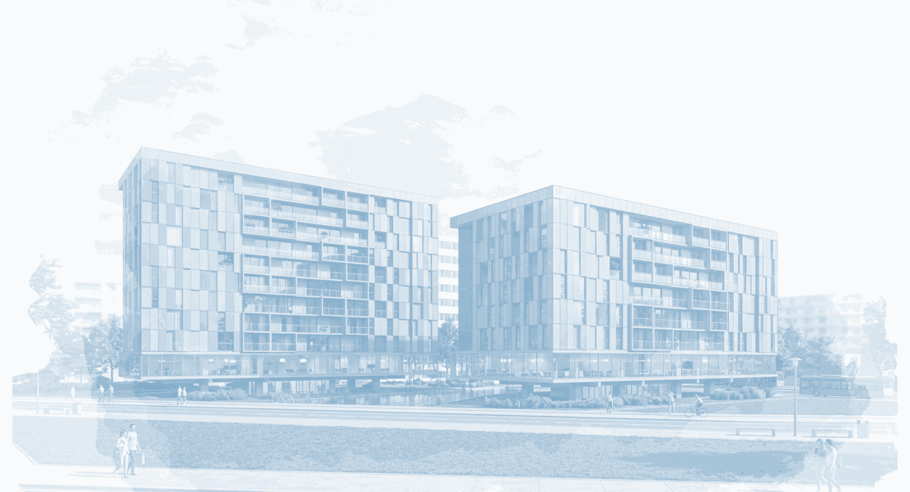
Sistema Modular en Madera para Edificios Multifamily
Sistema constructivo prefabricado en madera para vivienda en altura, optimizado para eficiencia energética y montaje rápido.
Archivo proyectual de investigación de posgrado en madera industrializada, física ambiental de edificios, infraestructura pública y visualización ejecutiva.

Sistema constructivo prefabricado en madera para vivienda en altura, optimizado para eficiencia energética y montaje rápido.
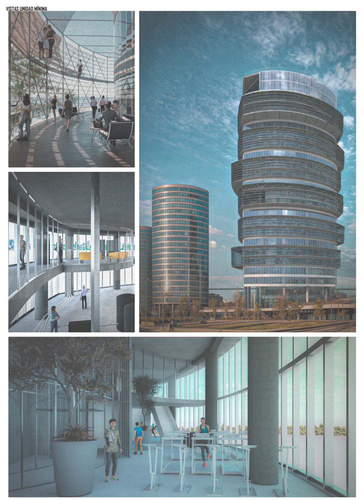
Rehabilitación arquitectónica de infraestructura corporativa hacia tipologías residenciales sostenibles.
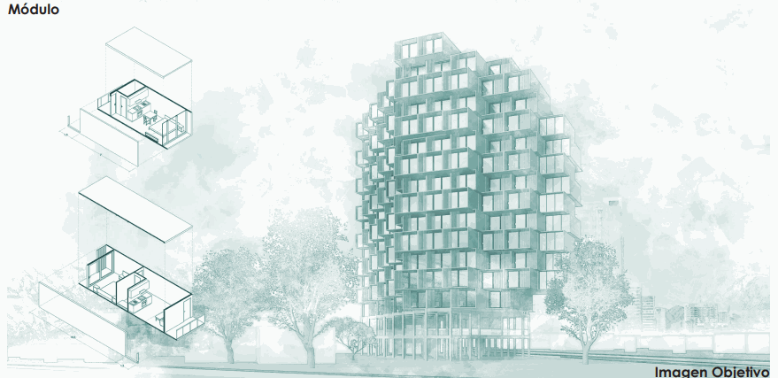
Desarrollo modular para renta basado en componentes prefabricados y confort ambiental pasivo.
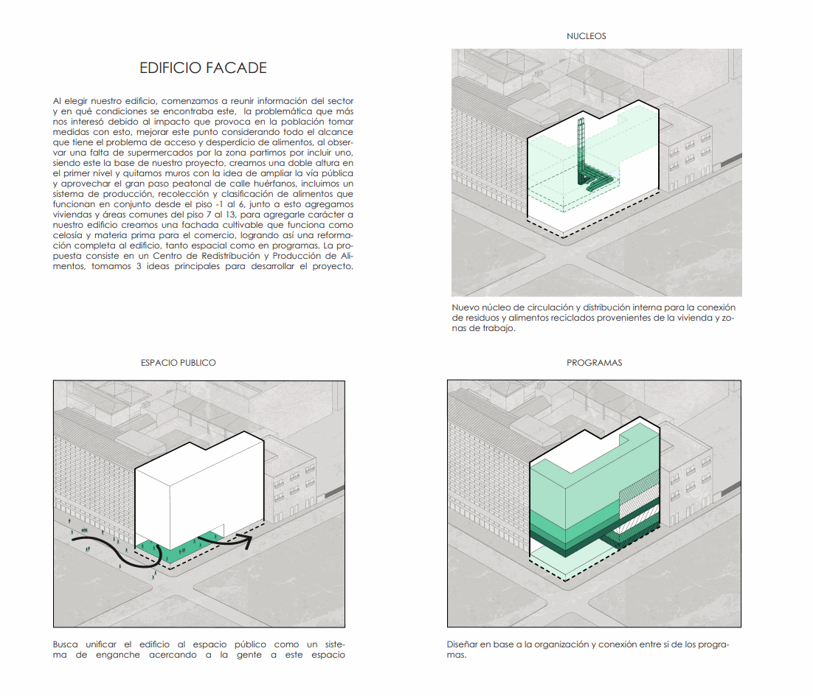
Edificio híbrido en Santiago con fachada de cultivo vertical y programa mixto residencial e industrial.
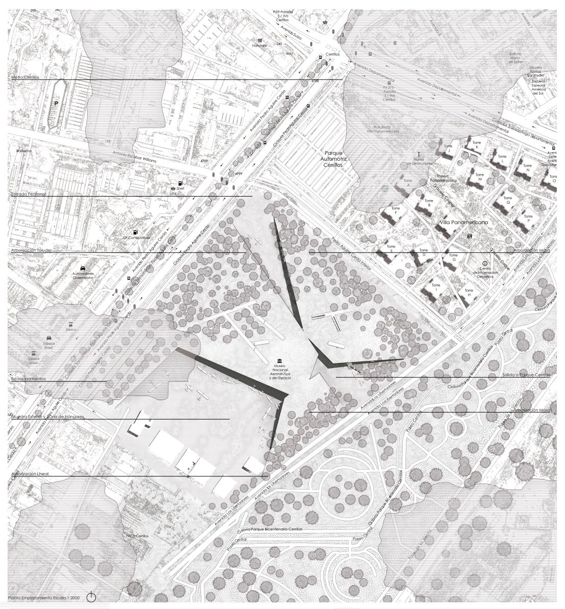
Centro cívico y cultural con galerías subterráneas iluminadas cenitalmente y cubierta transitable.
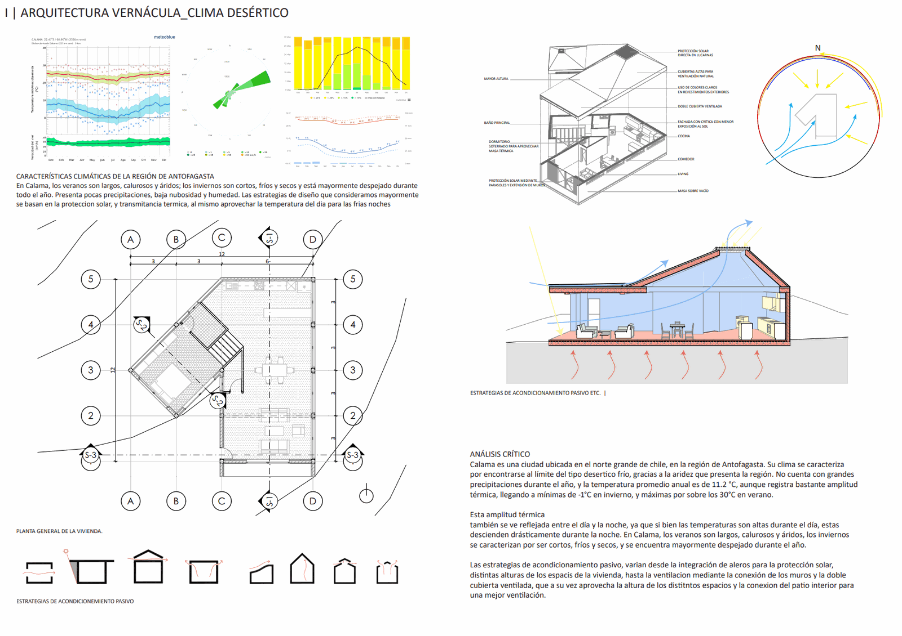
Vivienda bioclimática para clima desértico con ventilación convectiva natural y control solar pasivo.
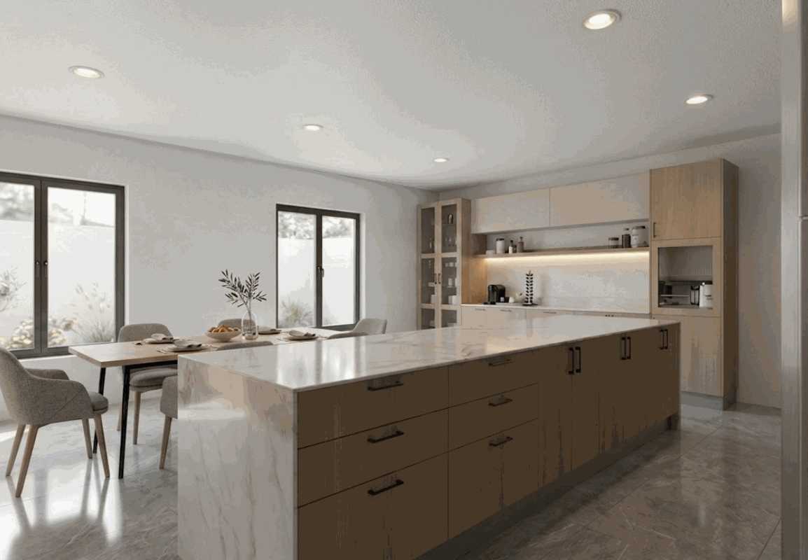
TODESCHINI CHILEDiseño comercial y modelado CGI de escaparates desarrollado para Todeschini Chile. Derechos y proyectos correspondientes a la marca.
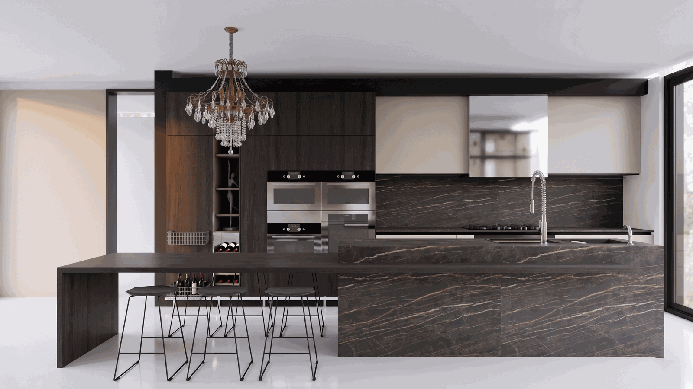
TODESCHINI CHILEEntornos corporativos contemporáneos desarrollados para Todeschini Chile. Modelado 3D y visualización espacial para la marca.
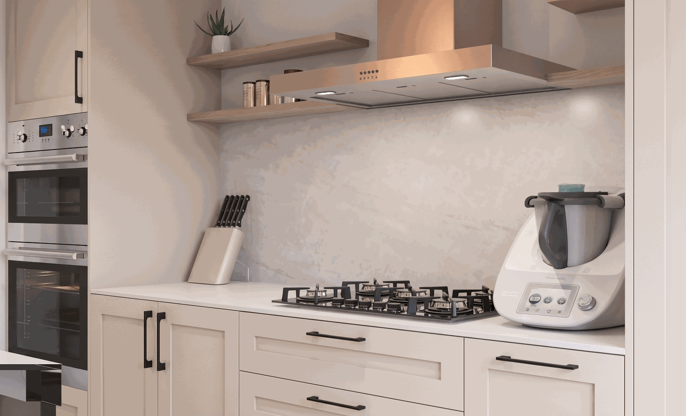
TODESCHINI CHILEExploración fenomenológica y visualizaciones de atmósfera residencial desarrolladas para Todeschini Chile.
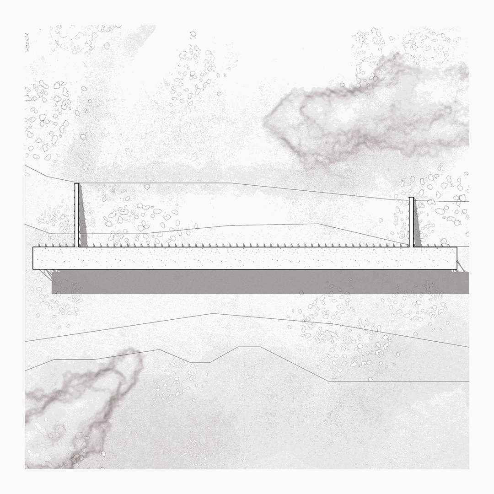
Diagramación y representación gráfica de plantas arquitectónicas y distribución espacial.
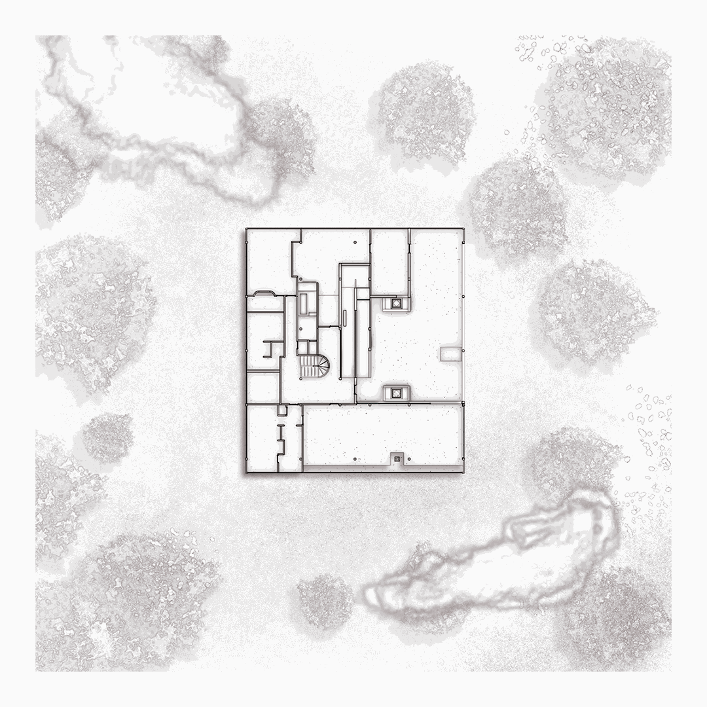
Detalles constructivos ejecutivos, secciones analíticas y despieces estructurales.
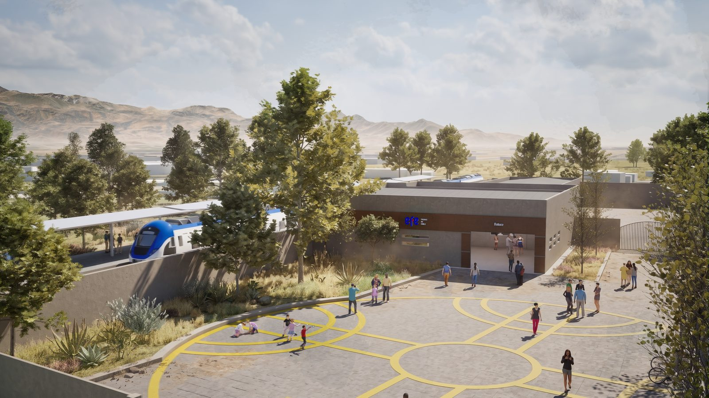
Modelado y visualización 3D para la nueva estación intermodal de Batuco de la Empresa de los Ferrocarriles del Estado.
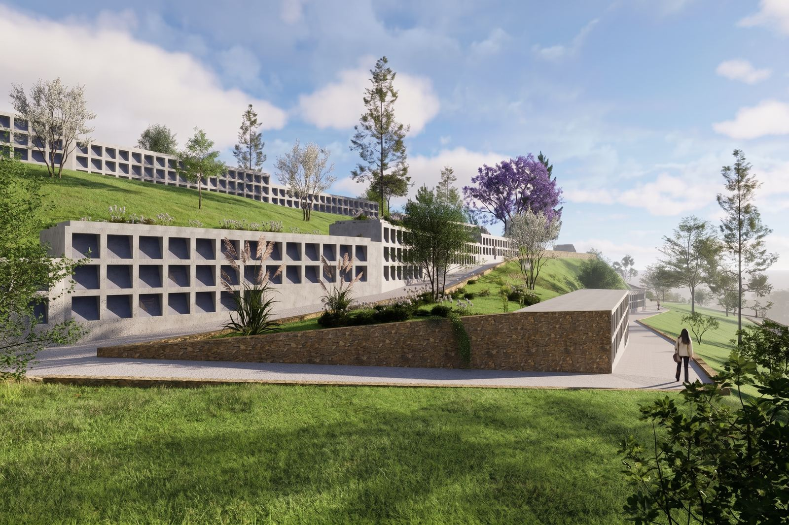
Propuesta conmemorativa en la topografía costera de Pichilemu para JPT. Terrazas verdes, columbarios de hormigón y muros de piedra.